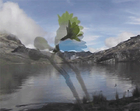

|
SIL EGGER
LIBERTAD | 2006 | 2’27
Format: DVD
Kamera: Sil Egger
In der kolumbianischen Region Arauca liegt der einzigartig naturbelassene Nationalpark El Cocuy. Vor wenigen Jahren noch von paramilitärischen Gruppen kontrolliert, ist das Gebiet heute in den Händen des staatlichen Militärs. Doch hoch oben, auf den Gipfeln, weit über 4000 Metern verliert all das an Bedeutung und das Gefühl der Freiheit, das sich wohl überall auf den Dächern der Welt findet, wird grenzenlos. Es erfasst auch die Protagonistin des Films, die sich vor dem atemberaubenden Bergpanorama erst zaghaft zur Musik wiegt, um sich dann immer wilder dem kolumbianischen Song hinzugeben und bis zum Exzess zum besungenen Kampf um die Freiheit zu tanzen. Eine kleine gelbe Blume macht den Punk.
Sil Egger, geboren 1976 in Lindenberg, diplomierte 2002 an der
Staatlichen Fachakademie für Fotodesign in München.
Sie studierte bis 2006 Medienkunst an der Kunstakademie München. Lebt aktuell in Berlin.
Filme: Bei ihr 2002 | Aufnahmeprüfung 2004 | Libertad 2006 | Tuned 2007
Ausstellungen: Eiszeit – Endkäufe, I-Camp München 2002 | Bei ihr, Tanzvideofestival München 2003 | NO HOLIDAY, St Cruz 2004 | A la orden, Bogota 2005 | Three-Tourist-Treasure, Heimspiel, Saigon 2006 | Tiger Translate Festival, Auckland 2007
zurück
|